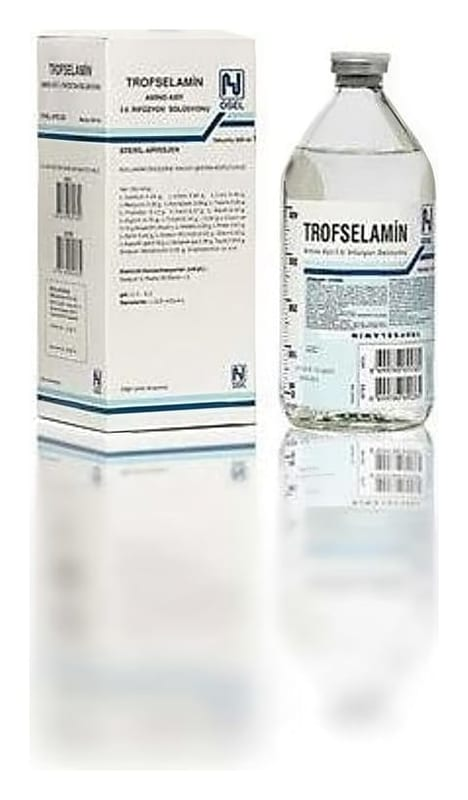

Trofselamin Aminoasit IV İnfüzyon Çözeltisi 500 ml Setli Şişe

Ne için kullanılır
KT · Bölüm 1TROFSELAMİN, vücut için besleyici maddelerden proteinlerin yapıtaşı olan arnino asitleri içeren bir çözeltidir. 500 mL’lik vakumlu şişelerde bulunur ve bir şişesi 30 gram amino asit sağlar.
Tek başına ya da diğer besleyici maddelerle karıştırılarak damar içi yoldan uygulanan TROFSELAMİN, özellikle süt çocukları ve küçük çocukların beslenme ve tedavisinde iyi tahammül edilecek şekilde düzenlenmiştir.
TROFSELAMİN, plazmadaki amino asit yoğunluklarını normalleştirir ve anne sütü ile beslenen normal çocuklarınkine eş bir arnino asit desteği sağlar.